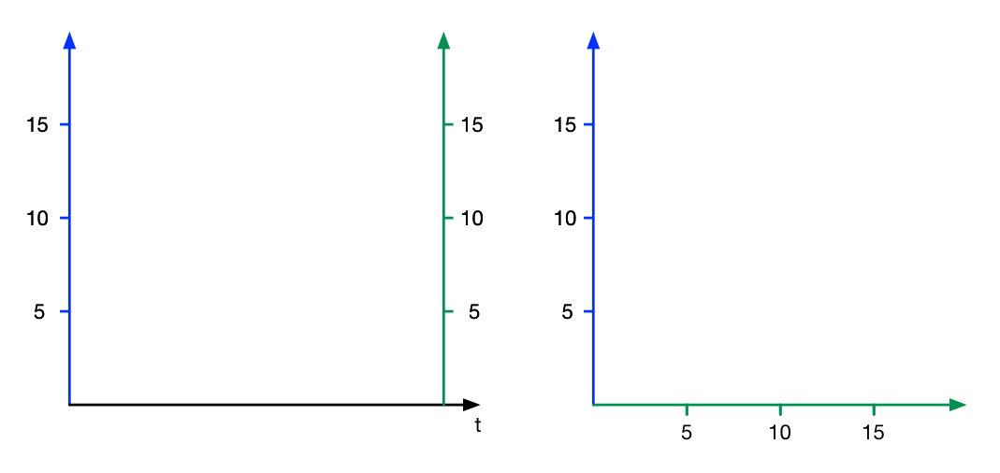
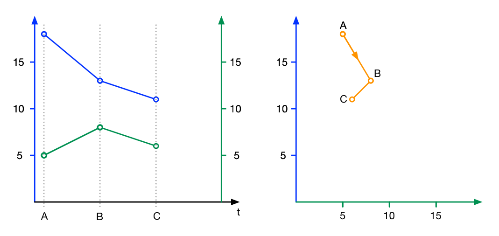
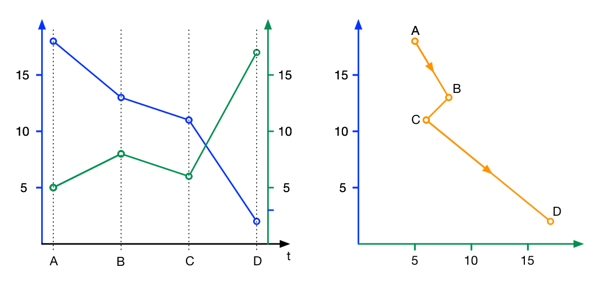

Connected scatterplots are useful for presenting relationships between two measures.
Press q and \ to continue.
Example:
[First chart] The lines form a shape tilted right. So blue and green are positively related.
[Second chart] The lines form a shape tilted left. So blue and green are negatively related
Press q and \ to continue.

You will be given 15 pairs of such charts.
For each chart, the task will be to complete the statement:
"Blue and green are positively/negatively related."
as fast and accurately as possible by choosing an option with the cursor.
Press q and \ to continue.
The two values are on the left drawn with two points, and on the right drawn with a single point.
On the left, time flows left to right. On the right, there are arrowheads on the lines to indicate such direction.
Press q and \ to continue.
The tutorial has ended. Now, once you press s or d, you will be given 5 practice trials.
When a trial begins, a question is first shown.
Then after a few seconds, a chart will be revealed and you will be able to answer the question.
Pick the correct answer by pressing s or d.
You are being timed, and time is as important as correctness.
Be as quick and accurate as you can.
[1st chart] Blue and green are positively/negatively related.
[2nd chart] Blue and green are positively/negatively related.
Blue and green are positively related.
Your answer was incorrect. Timed out for 5 seconds...
That took more than seconds. Please answer more quickly.
Press q and \ to continue.
You finished! You rock! Thanks for participating!